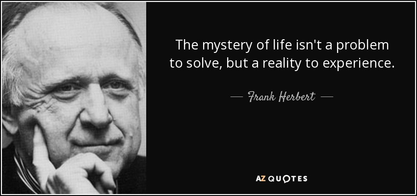

The Origin of Life
How life came to exist is a question that has baffled people since ancient times.
Defining Life
Biology and related fields have made progress in explaining what living organisms are made of and what processes occur within them, but not what life is.
Death
For many living beings, death is the greatest mystery.
Qoute
"The mystery of life isn't a problem to be solved, but a reality to experience; a process that cannot be understood by stopping it. We must move with the flow of the process, we must join it, we must flow with it." - Frank Herbert.
Contact Us
If you have any questions or would like to learn more about The Mystery of Life, please fill out the form below: